Maya Models
The first things I ever built in 3D, from 2010 to 2014: guns, a raven, a car, robots, a dragon wasp, the kitchen from my first short and a computer desk. Click one for the full size.

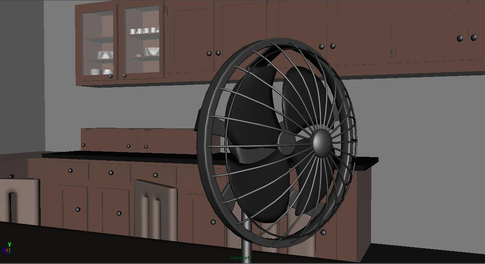

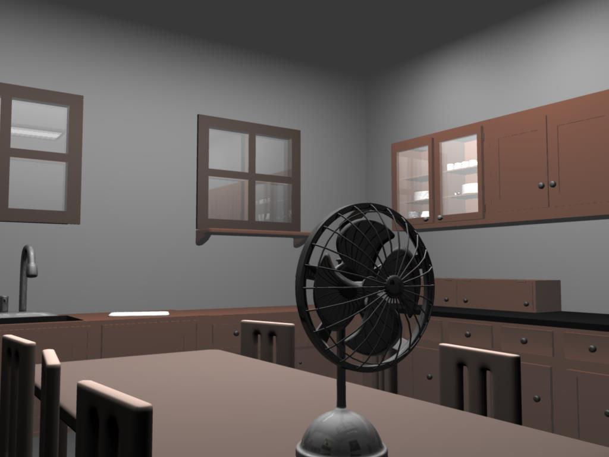

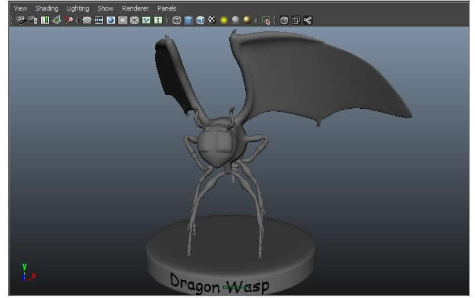

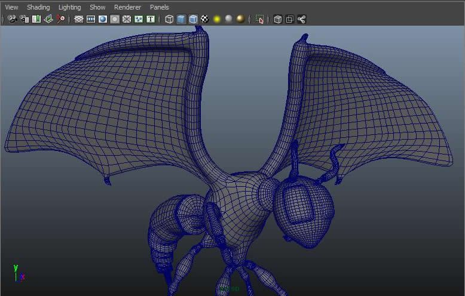

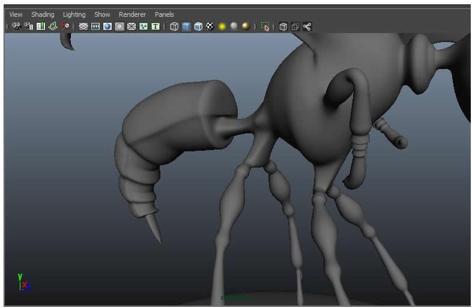

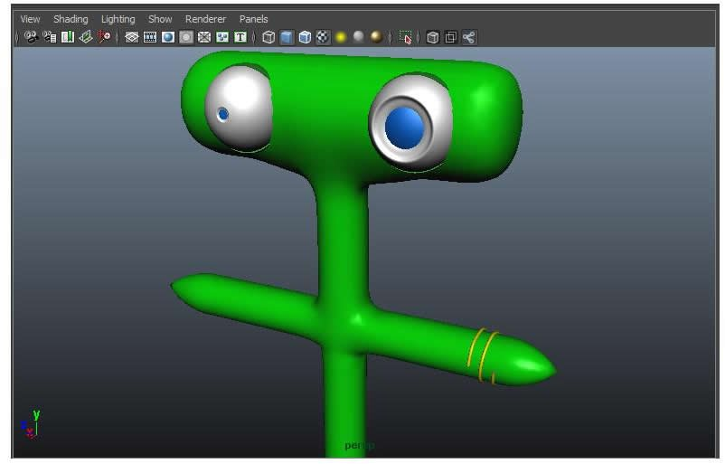

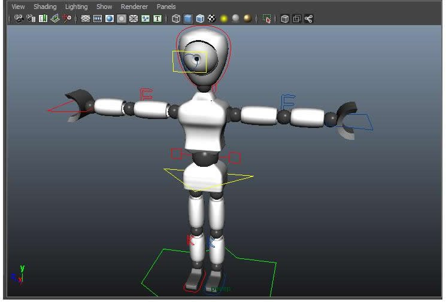

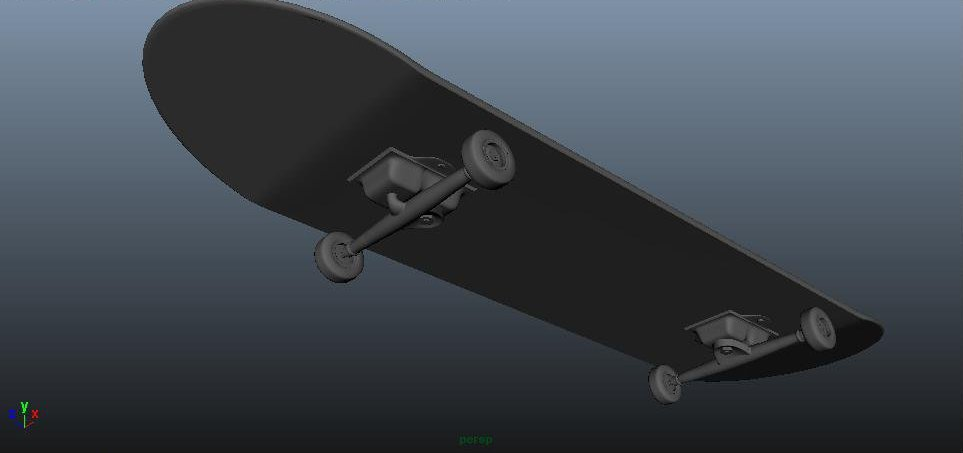

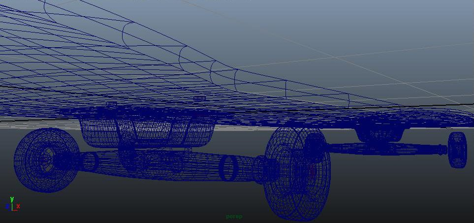

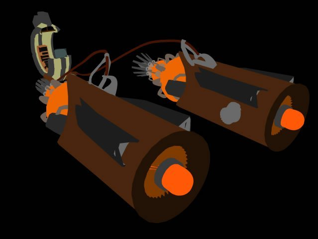

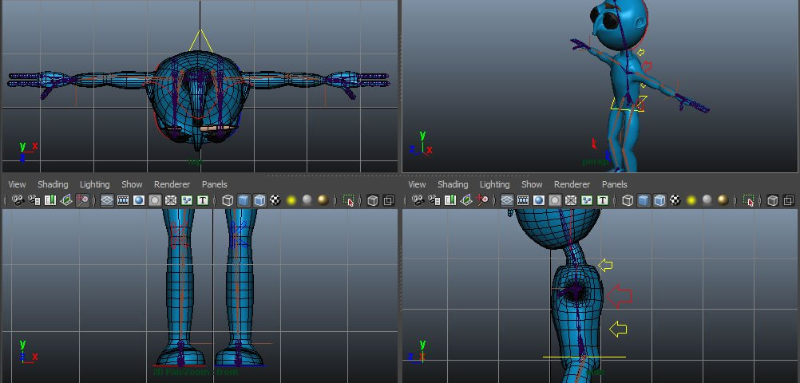

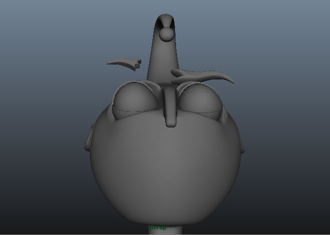

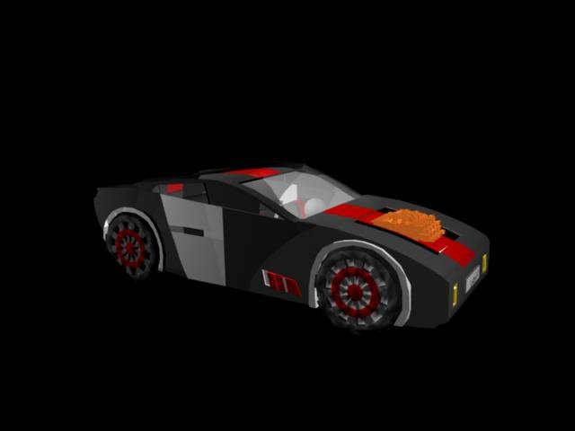

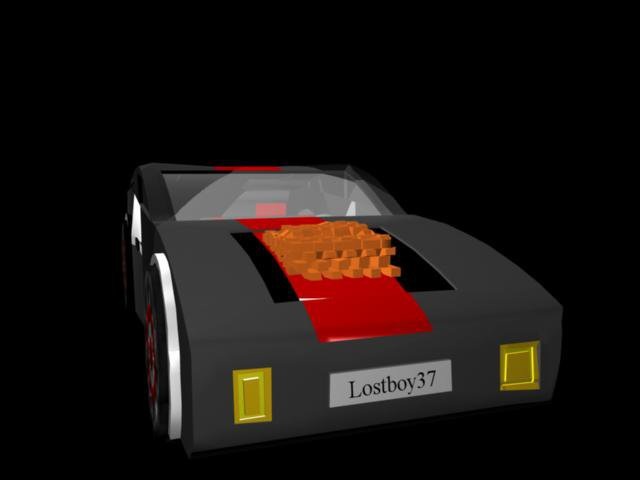

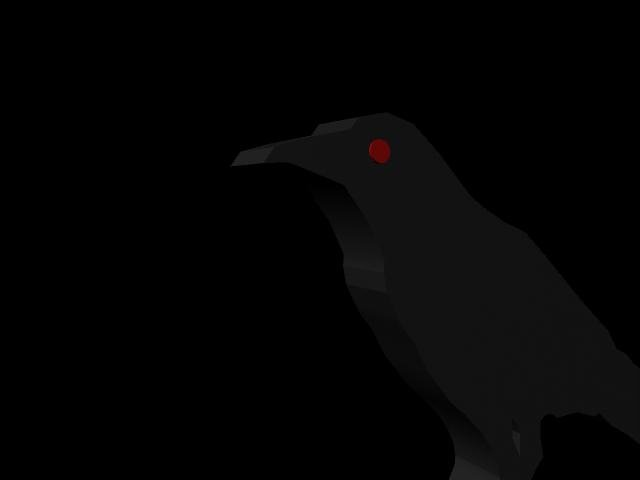

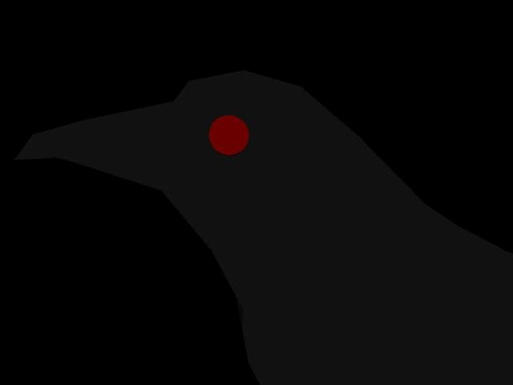

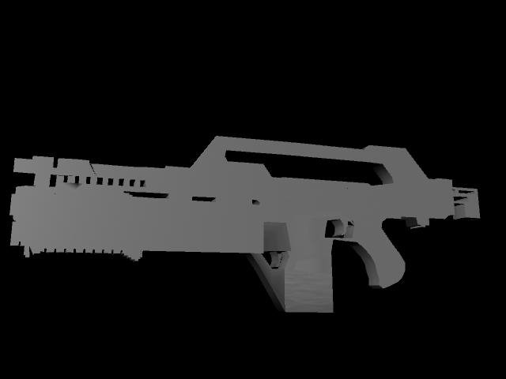

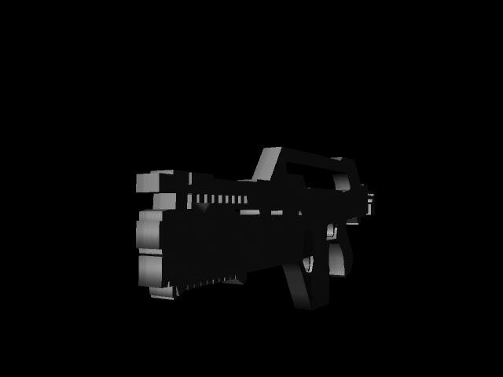

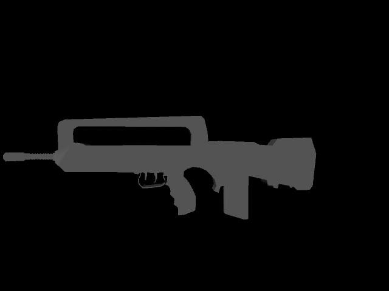

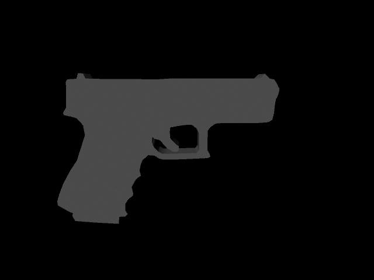

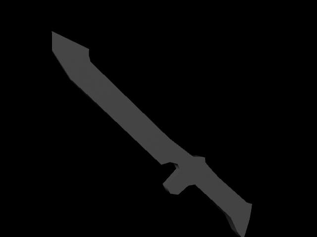

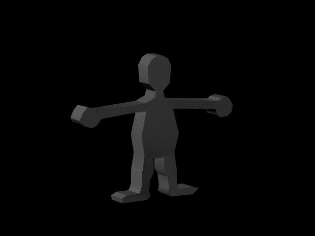

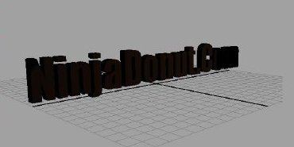